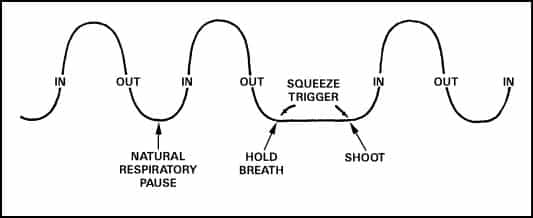
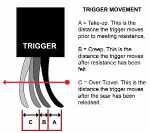
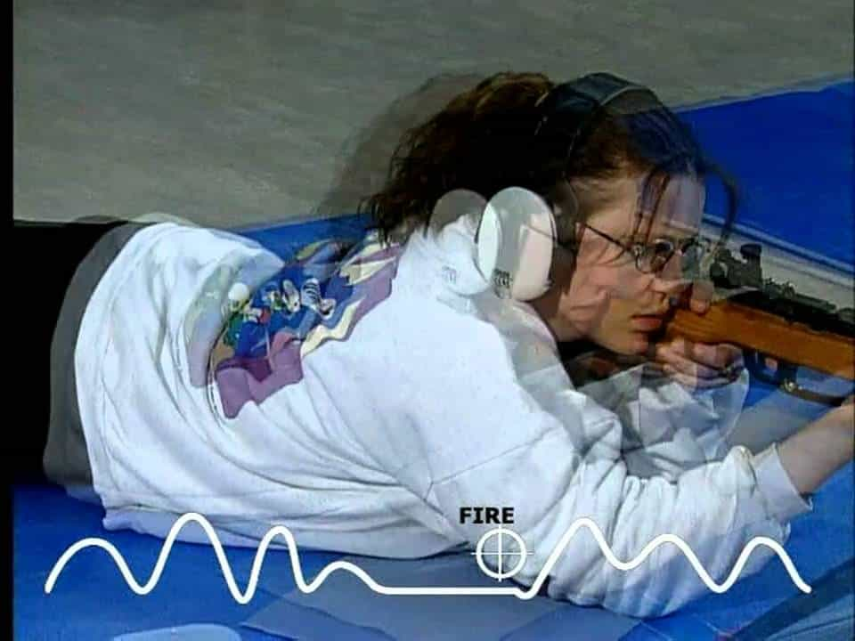
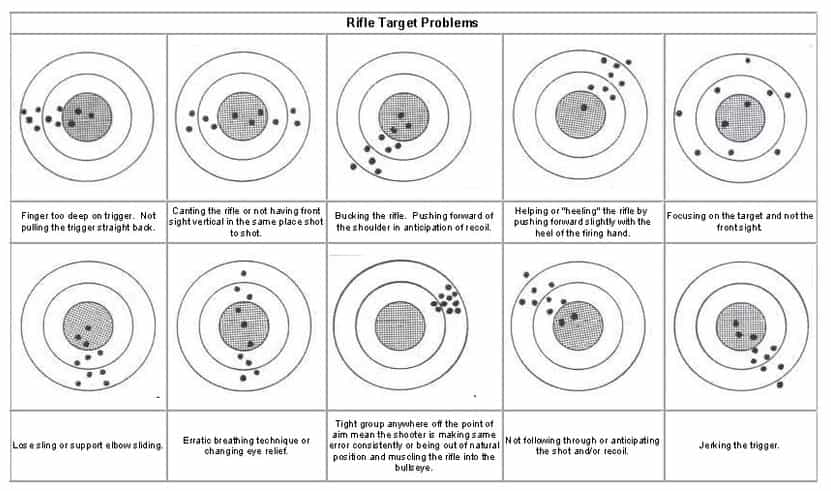

Luke Stranahan is an engineer by trade and an armed patriot by inclination. He writes for Return of Kings as a leisure pursuit and an attempt to do his part to help reverse the slide into moral decrepitude of modern society. Follow him on Twitter.


Now that we know a little about gun sights and how to use them, we should discuss the rest of the steps of firing a shot and what your resulting group on paper will tell you. Combined with the first article on sight picture, and a planned article on sight adjustment, this will explain the fundamentals of shooting accurately at close distances. This, in turn, will lead to discussion of shooting positions, and, ultimately, ballistics.
One of the more important things to understand about accurate shooting, whether it be pistols or rifles, is that you cannot hold sights on target continuously. Two things prevent you from doing that, and those are that your muscles get tired, and your breathing will mess you up.
I teach rifle shooting as one of my hobbies, and, paradoxically, it is often the young guys, in shape, who also think they know how to shoot, that end up getting out shot by their less physically strong and less experienced wives, girlfriends, or kids. The dudes try to muscle the rifle onto the target, instead of using something commonly called natural point of aim, which abbreviates to NPOA.
Although the discussion is incomplete without explaining shooting positions in depth, the idea behind NPOA is, when you are in a shooting position (prone, seated, or standing), the rifle will point somewhere naturally. This is most easily seen if you shoulder a rifle, and close your eyes. Breathe a couple times, then open them, and notice that the rifle is NOT where you left it on the target.

Establishing NPOA
The novice will quickly move the rifle with his arms where it needs to go, and wonder why his groups are inconsistent. This is because muscle control is not precise, especially over time as you get tired. The trick is to not move your arms, but to move your body. It is best explained by a question posed to a WWII fighter pilot of “how do you aim the guns?” by a young boy. The answer: “You don’t aim the guns; you aim the plane.” The rifle and your body is a unit, move them together to stay reliably on target.
The second concept is breathing. Every marksmanship coach has their thing; the programs I teach come from the old Army shooting courses, which is now only done by the Marine Corps. The key concept here is repeatability. You can’t hold your breath, low oxygen will ruin your shooting, and the act of breathing will move your sights as your diaphragm moves. You want to fire at the end of a breath. Breath normally, exhale normally and completely, and squeeze the trigger at the end of the exhalation, during that 3 to 5 second window before you need to breathe again.

This is called “Rifleman’s Cadence” and is what “rapid fire” actually is. Once you have your position and NPOA dialed in, you should be able to fire one accurate shot (later, more) per breath, on a target, at any range, and continue until you run out of ammo, or need to switch targets.
Riflery is a Zen sport. You lie on the ground, control your breathing, and get into the zone where it’s just you, your weapon, and your target. You must have two kinds of focus here, with the first being mental. Don’t worry about other things, concentrate on good shooting.
Even if Massad Ayoob himself uncorks a compact .44 in the lane next to you, focus on YOUR shooting.
The second focus is visual. If you are shooting an iron sighted rifle, you need to focus your eye on the front sight. Not the back sight, and not the target. The back sight exists to frame the front sight, and the target is there, and you can’t move it. The only thing you can move is the front sight, and that is what you should focus your eyes upon.
The target is blurry, the rear sight is blurry, but the front sight is in focus. This works for pistols and rifles.
Scopes are both harder and easier. Sometimes, you can focus on both the crosshair and the target, but you need to prioritize the crosshair. Often, you can see your bullet holes, and you can over exaggerate your sight movement at high power, so your target shooting should be done at lowest power on a scope so you don’t chase your bullet holes of previous shots, or get overly concerned with the sights movement and “fuss the shot.”
Most people, misinformed by Hollywood, think that you yank the trigger and it will result in an accurate shot. There are only two times I can think of to punch a trigger, with the first being wing shooting (clay pigeons and skeet and dove hunting, etc) which is a totally different style of shooting, and the second being close range shooting where you are under a time crunch to send lead down range, and a little bit of disruption to your aim by punching the trigger can be afforded. However, many excellent shooters can shoot very fast with good trigger control.
Triggers are a mixed bag, and most stock triggers on budget rifles are bad, but that shouldn’t stop anyone from shooting poorly when they know what they are doing. There are a few terms we should know about triggers. Take-up is the slack in the trigger from its at-rest position until you feel decent resistance.

If it’s a one stage trigger, that resistance after the take-up will “break” at a certain force (usually measured in pounds over here, kilograms elsewhere), and the sear will be released and the hammer or striker will actuate. If it’s a two stage trigger, there will be a lighter force first section, and a stronger second section before the trigger breaks. I tend to think single stage triggers are more for match shooting, and two stage triggers are more for duty/combat work.
Overtravel is when a trigger breaks, but keeps going past that spot, and it can be adjusted out with stop screws and internal work. Sear reset is when you release the trigger after the shot, and the sear resets itself to shoot again. (Full auto guns work differently in that area.) Creep is when you put the amount of force needed to break the trigger on it, but it moves further before breaking, instead of breaking “like a glass rod.” Lastly, roughness in the mechanism is often compared to being gritty.
When firing, you want to press the trigger through its take-up before you fire, and apply some force (either enough to get to the second stage or not enough to break the first stage if it’s a single stage) and keep it there. As you cycle your breath, and the sights come back on the target, apply the last amount of force and break the shot.

Once the shot goes off, you must do two things. Firstly, you must follow through. A golfer does not stop his swing after he hits the ball, he goes all the way. You should not reflexively let go of the trigger, either, for two reasons. The first is that it can actually disrupt your aim, even though the bullet is mostly gone down the barrel, and the second is that you do not need to fully release the trigger to shoot again. If you hold the trigger down after a shot, and release it slowly, the gun will make a click when you reset the sear, and that’s all you need to do. This saves you time on the next shots.
The second thing you must do is call your shot. You must know where the sights are when the shot goes off, and you must be able to call fliers, which are off target shots due to bad aim. If you know you threw a flier out of a group of five, and know it went high left, when you go down to the target, you know to discount the one high and left, knowing that it’s not the gun that did that.
In the first article, we covered sight alignment and sight picture. We just discussed breathing, focus, firing the shot, and follow through. Doing this properly, with a good position and sling use (look for these in future articles), will result in good groups.
A group is your collection of holes from the amount of rounds you fired into the target. These should be shot in a string in cadence, and are usually five shots. What we are going to concentrate on now is the shape of group, and not where it is on the target. The size and shape of the group is on you, the shooter. Where the group is on the target is on the rifle, and you fix that by sight adjustment, which will be the next article in this three part series, but the takeaway point here is that you must fix your shooting before you fix the sights, otherwise you won’t know how to fix them.

I will cover the most common group errors I see on firing lines.
Wide open group: This group has rounds all over the place, and it means that the shooter does not have a solid shooting position, or does not have NPOA established.
Vertical stringing: These rounds are in a line up and down, and show that the shooter is not shooting at a consistent point in his breathing cycle.
Horizontal stringing: These rounds are in a line left and right, and indicate bad trigger control.
Diagonal stringing: Bad breathing, and either also bad trigger control, or poor position with the support elbow not under the rifle.
Two groups: This shows that the shooter changed something mid string of fire, and, since you can’t tell which is which, you need to eliminate the change before further addressing the problem.
Note that these groups can be wherever on the target, and, if they are off target, as well as having a shape problem, it means there is a human problem AND a sights problem.
Although I will attempt to break up the monotony of the shooting tutorials here soon, since these are admittedly getting a little dry, with something like “Idiots Seen In The Gun Store,” like the efforts of my colleague Br. Moner, I am trying to get someplace and stick an 8 hour class into a series of articles.
I do agree with one of the comments in the previous article in particular that Ed said. “Don’t learn to shoot from a webpage.” Although I’d happily take anyone here shooting if I could, and I would feel completely competent keeping you safe and teaching good habits and skill on a range in person, the internet, even with videos, leaves a lot to be desired. My intention is to awaken your awareness of the shooting discipline so that you will seek out competent instruction of your own and that my words might help you to discern good instruction from bad and know which areas of the sport, if any, you might be interested in pursuing. Be safe.
Read More: How To Properly Aim A Firearm